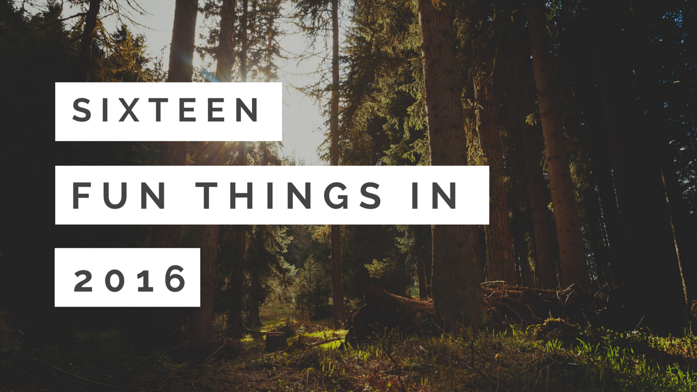
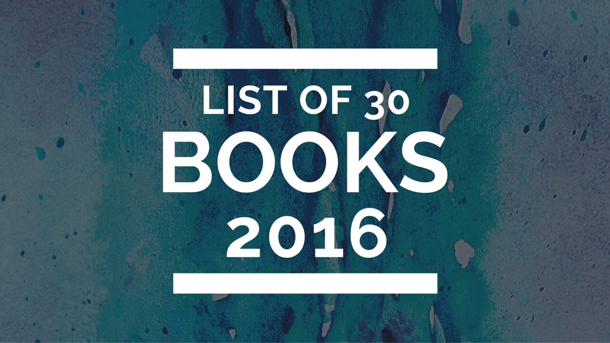

16 Things in 2016 & My 2016 Book List

Here we go! The yearly list.
You know, the list I make every year and every year gets harder and harder to write, by design (14 things in 2014,15 things in 2015, etc etc). The list that is extra hard this year, given the circumstances. What circumstances? Let me explain. Sorta. Somewhat.
I don't have the slightest idea what is going to happen this year. I don't know what will even happen in two weeks from now. I've always have stability in my life, more or less. I've always had a bigger picture, a goal, a future plan. Well, I've changed all that. Last June, I left my relationship of 5.5 years. While it sucked...a lot...I knew it was something I needed to do for me. I too easily become comfortable in a situation, and comfort drives me mad. Yet I don't like being uncomfortable. So what do I want? I'm not even sure. But I do know I like being pushed and I wanted/want to grow. I had this realization that hit me - I'm young and need to explore the world before I regret it. I need to experience a lot, know what I do/don't like, really gain perspective of things before I'm 50 and wondering then.
Well so yeah. I did that. I quit my Biochemistry job at the CDC, I moved to Washington state, and began a new relationship. I learned so much so fast - the learning curve was crazy. I learned a lot about myself, I changed a lot about myself, and in that time I pushed myself to do things I was afraid of. I published a freaking cookbook! Crazy.
But, there were also a lot of things I didn't enjoy. I also found myself losing a part of me, losing my identity, and the relationship didn't work out ultimately. No hard feelings, it's just something we tried and it didn't work out. So that relationship has also ended recently, and I moved out at the end of December. So while I can't explain the entire situation 100% yet..just know that I will with time. I hate feeling like I'm hiding something from you guys. I can honestly say I've never had to "hold information" like that and have always been so transparent. But right now I am so emotionally drained and I just need some time to fully grasp the situation, myself, before I go around masquerading it to the world.
With that being said. I don't know anymore. Everything I imagined happening, won't be. Everything I had planned, has not gone that way. It's hard to deal with for someone who has major planning issues, ha. I have to know exactly how things will go or else it's a nightmare. But it's a learning lesson and being able to cope with unexpected events is something anyone needs to know - the sooner the better. I wanted to let you know that if I disappear for days at a time (or longer), know that I will always be around. Just right now I need to put a whole lot of energy into myself and my happiness; in the process, I sometimes run out of creative energy to share with the world. But it will come back. It always comes back.
It's taken me a while to determine what I know for sure I can expect in 2016, but here it is! There is always something to look forward to. It's so weird because for the last 6 years, I've been in a relationship. I've lived considering someone else, planning days around someone else...and now I'm not. It's weird. It's not bad, but it's soo different. It takes some adjusting, but it's kind of fun! 100% of my days are determined by me. How cool. I'm the kind of person that has to be doing something constantly and neeed to feel stress, so I'm picking up a lot of things to cram my days with now ha.
In 2016, I am looking forward to
-
Opening my Etsy shop and exploring other forms of creativity
-
My 25th birthday!! Official "adult" point in my opinion. Ew.
-
Joining a local cycling group & learning more about the sport & meeting cyclists!
-
Living 100% authentically and rediscovering myself
-
Going to cons! (anime/video game conventions - maybe getting back into cosplaying)
-
Cutting my hair real short & putting blue/purple back in it.
-
Pesto's 1st birthday! We're gonna have a big doggy bash :3
-
Expanding Beechie's Bakehouse product line & growing/learning as a business in general
-
Reading 30 books from my 2016 book list
-
Going to a concert. Not sure which yet, but I'm determined to go since it's been years.
-
Maybe another cookbook??
-
Maybe working in a lab again?? (trying out a private company would be awesome- particularly interested in food science rather than analytical chemistry which my last job was primarily)
-
Getting better at vlogging & video editing!!! I want to get a Canon Powershot G7 or Powershot N2
-
Travelling somewhere. Not sure where yet but I will this year. Top picks: New York City, any beach, Austin, Colorado.
-
Learning more about veganism and continuing to feel great & healthy!!
-
Seeing the movie Alice in Wonderland: Through the Looking Glass. Is that weird? I'm really really really excited.

And this is my 2016 book list - 30 books I will read! The books I own/am in the process of, I'll italicize. When I finish a book, I'll bold it out. I haven't finished compiling the list yet, but as I hear of more, I will add to it! If you have any recommendations, please let me know!! I suck at discovering books.
2016 Book List
-
Big Magic by Elizabeth Gilbert
-
Binge by Tyler Oakley
-
These Things Hidden by Heather Gudenkauf
-
Red Queen by Victoria Aveyard
-
Glass Sword (Red Queen 2) by Victoria Aveyard
-
#GIRLBOSS by Sophia Amoruso
-
Me and Earl and the Dying Girl by Jesse Andrews
-
Gone Girl by Gillian Flynn
-
The Girl on the Train by Paula Hawkins
-
Made You Up by Francesca Zappia
-
The Beginning of Everything by Robyn Schneider
-
All the Bright Places by Jennifer Niven
-
Eating Animals by Jonathan Safran Foer
-
Ghost Boy by Martin Pistorius
-
Don't Try to Find Me by Holly Brown
-
Harry Potter and the Sorcerer's Stone by J.K. Rowling
-
Harry Potter and the Chamber of Secrets by J.K. Rowling
-
Harry Potter and the Prisoner of Azkaban by J.K. Rowling
-
Harry Potter and the Goblet of Fire by J.K. Rowling
-
Harry Potter and the Order of the Phoenix by J.K. Rowling
-
Harry Potter and the Half-Blood Prince by J.K. Rowling
-
Harry Potter and the Deathly Hallows by J.K. Rowling
So excited to see what this year holds. It'll be very interesting. I hope you join me in the process! What are you looking forward to this year? What are you focusing on achieving?
So much love,
Kim